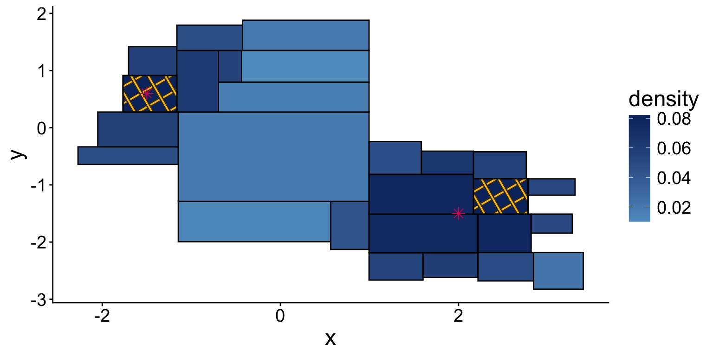
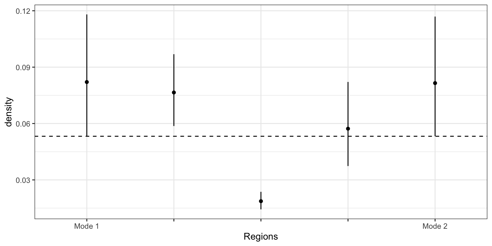

── Conflicts ────────────────────────────────────────── tidyverse_conflicts() ──
✖ dplyr::filter() masks stats::filter()
✖ dplyr::lag() masks stats::lag()
ℹ Use the conflicted package (<http://conflicted.r-lib.org/>) to force all conflicts to become errors
library(gridExtra)
Attaching package: 'gridExtra'
The following object is masked from 'package:dplyr':
combine
Loading required package: KernSmooth
KernSmooth 2.23 loaded
Copyright M. P. Wand 1997-2009
library(igraph)
Attaching package: 'igraph'
The following object is masked from 'package:ks':
compare
The following objects are masked from 'package:lubridate':
%--%, union
The following objects are masked from 'package:dplyr':
as_data_frame, groups, union
The following objects are masked from 'package:purrr':
compose, simplify
The following object is masked from 'package:tidyr':
crossing
The following object is masked from 'package:tibble':
as_data_frame
The following objects are masked from 'package:stats':
decompose, spectrum
The following object is masked from 'package:base':
union
library(ggpattern)
Warning: package 'ggpattern' was built under R version 4.5.2
dir_home <-"/Users/zq/qianzhao@umass.edu - Google Drive/My Drive/Research/Histogram/"dir_work <-"/Users/qianzhao/Google Drive/My Drive/Research/Histogram/"# load the BetaTrees packageload_all(path =paste0(dir_work, "BetaTree/JASA/V1/BetaTrees-JASA-v1/R/"))
Applying Beta-trees to identify modes in a distribution
A second application of the Beta-tree histogram is identifying target regions which might indicate modes in the underlying distribution.
A histogram provides a summary of the underlying data distribution by estimating the average density in individual region \(R\), defined as \(\bar{f}(R) = \frac{\int_R f(x)\mathrm{d} x}{|R|}\) (when \(f\) is a continuous distribution and \(|R|\) is the area of \(R\)). Regions with higher average density \(\bar{f}(R)\) indicates a mode in the underlying density. This notion of modes as regions where excess probability mass is concentrated were introduced in Muller and Sawitzki (1988) (in this paper, the authors defined excess mass as \(\int_C (f(x) - \lambda)_+ \mathrm{d} x\)). Visually, the group of rectangles on the top left and lower right corner (in the 2d Gaussian mixture) have higher \(\bar{f}\) compared to the rectangles in between. The true mixture distribution has two modes at \((1.5, 0.6)\) and \((2, -1.5)\), which roughly corresponds to the rectangles colored darker green. Therefore, the local maxima of \(\bar{f}(R)\) might indicate modes in the distribution \(f(x)\). Because our algorithm provides a confidence interval for \(\bar{f}(R)\), we can state with confidence whether one region \(R\) is a local maxima, and these local maxima suggests modes in \(f\).
To identify local maxima, we consider a consequence of local maxima: suppose two regions A and B are distinct modes (in terms of average density \(\bar{f}(R)\)), then along any path connecting A and B, there should at least one region \(R\) such that \(\bar{f}(R) < \min(\bar{f}(A), \bar{f}(B))\). Here, instead of comparing the estimated \(\bar{f}\), we compare the upper limit of CI of \(\bar{f}(R)\) with the lower limit of the CI of \(\bar{f}(A)\) and \(\bar{f}(B)\). This definition aligns with the idea in Burman and Polonik, where they propose to determine whether two points \(x\) and \(y\) are distinct modes by testing whether \(f(x_{\alpha})\leq \min(f(x), f(y))\) along any convex combination \(x_{\alpha} = \alpha x + (1-\alpha) y\), \(0\leq \alpha\leq y\). Our formulation differs from their approach in two ways: first, we test all of the paths connecting two candidate regions A and B, and this is necessary because though we may reject null hypothesis along one path, we may not be able to reject the null hypothesis along a different path. One example where this situation occurs is when a bivariate radially-symmetric density dips in the center (see Figure 7.1 in Scott (2015)); second, we only need to check a finite number of regions since the number of rectangles are finite.
We now describe how to identify local maxima of \(\bar{f}(R)\). Our procedure can be summarized into the following steps (we denote \(\mathcal{M}\) as the list of candidate modes)
Compute the adjacency matrix \(A\) of dimension \(N\times N\) (\(N\) is the total number of regions), \(A_{i,j} = 1\) if the \(i\) and \(j\)-th rectangles are neighbors. Two regions are neighbors if they are adjacent to each other in the d-dim Euclidean space. For instance, in 2-dim, two rectangles are neighbors if \(A_x\cap B_x\neq\emptyset\) and \(A_y\cap B_y\neq\emptyset\), where \(A_x = [A_{x,l}, A_{x,u}]\) (\(A_{x,l}\) and \(A_{x,u}\) are lower and upper endpoints of the \(x\)-axis of the rectangle). This definition extends to higher dimensions.
Order regions according to the estimated density \(\hat{f}(R)\), i.e., \(\hat{f}(R_{(1)}) > \hat{f}(R_{(2)}) > \ldots > \hat{f}(R_{(N)})\).
Start from rectangle with the highest estimated average density \(R_{(1)}\) and mark it as a candidate mode (we can refer to it a \(M_1\)), \(\mathcal{M} = \{M_1\}\).
Iterate from \(i=2,\ldots, N\),
Iterate through every candidate modes \(M_i\).
Iterate through every path connecting \(R_{(i)}\) with \(M_i\).
Along the path, is there any region R such that \(\hat{f}(R)_U < \min(\hat{f}(M_i)_L, \hat{f}(R_{(i)})_L)\)? Here, \(\hat{f}(R)_L\) stands for the lower confidence limit of the density on \(R\).
If this is False, then \(R_{(i)}\) is not a mode. Move on to \(R_{(i+1)}\)
Add \(R_{(i)}\) as a candidate mode \(\mathcal{M} = \mathcal{M}\cup \{R_{(i)}\}\).
As an example, we sample \(n=2000\) observations from a 2-dim mixture of two Gaussian distributions:
# function to plot the candidate modes# INPUTS# hist -- the histogram # modes -- the true location of the modes, should have two columns called "x" and "y"# candidate_modes -- the candidate modes returned by our algorithmPlotModes2D <-function(hist, modes, candidate_modes){colnames(hist) <-c("xmin","ymin","xmax","ymax",'density','lower','upper', "ndat",'level') hist <-as.data.frame(hist) g <-ggplot() +geom_rect(aes(xmin = xmin, xmax = xmax,ymin = ymin, ymax = ymax,fill = density), color ="black",data = hist) +scale_fill_gradient2(low ="#f7fbff", mid ="#6baed6", high ="#08306b",aesthetics ="fill", name ="density") +geom_rect_pattern(aes(xmin = xmin, xmax = xmax,ymin = ymin, ymax = ymax, fill = density), data=hist[candidate_modes, ], pattern ='crosshatch', color ="black", pattern_fill ="#FFC107") +geom_point(aes(x = x, y= y), data=modes, shape =8, color ="#D81B60", size =3) +xlab("x") +ylab("y") +theme_classic() +theme(text=element_text(size =18))return(g)}# function to plot density along the shortest path between two regions A and B# INPUTS# hist -- the histogram # d -- data dimension# g -- adjacency graph of the regions in histogram # A, B -- two regionsplotdensity <-function(hist, d, g, A, B){# find the shortest path between A and B path <- igraph::shortest_paths(g, from = A, to = B)$vpath[[1]]# make a bar plot of the density along the path density <-data.frame(id =factor(1:length(path)),density = hist[path, (2*d +1)],lower = hist[path, (2*d +2)],upper = hist[path, (2*d +3)])# add two lines of the shorter of the lower CI of A and B g <-ggplot(density) +geom_point(aes(x = id, y = density)) +geom_segment(aes(x = id, xend = id, y = lower, yend = upper)) +geom_hline(yintercept =min(density$lower[1], density$lower[length(path)]),linetype ="dashed") +ylab("density") +theme_bw() +scale_x_discrete(name ="Regions", labels =c("Mode 1", rep("", length(path)-2), "Mode 2"))return(g)}
colnames(mu_2d) <-c("x", "y")# Figure 7 (a) in paperFigMode2d <-PlotModes2D(hist2d, mu_2d, candidate2d$mode)# Figure 7 (b) in paper FigCI2d <-plotdensity(hist2d, d =2, g = candidate2d$g, A = candidate2d$mode[1], B = candidate2d$mode[2] )FigMode2d

FigCI2d

Next, we consider a 3-d Gaussian mixture as in Section 4 example 4.
As to the 3-d Gaussian mixture, we identify 3 out of 3 true modes. We show the location of true mode and the modes identified from the algorithm (here we show the center of the region) in the table below.
get_center <-function(hist, d, candidate_modes, ndigits){# center of the regions identified as modes center <- (hist[candidate_modes, 1:d] + hist[candidate_modes, (d+1):(2*d)]) /2 center <- center[order(center[,1]), ] order <-order(center[,1]) dat <-data.frame(index =1:nrow(center),location =apply(center, 1, function(t) paste0('(', paste(round(t, ndigits), collapse =","),")")))return(list(dat = dat, order = order))}# Table 1 in paper knitr::kable(get_center(hist3d, 3, candidate3d$mode, 2)$dat)
index
location
1
(-2.74,-3.05,-2.4)
2
(-1.08,0.76,0.71)
3
(2.27,-1.38,-0.9)
An approximate algorithm
When the number of regions in the histogram is large, enumerating every path connecting two regions \(R_i\) and \(R_j\) becomes computationally infeasible. In this situation, we can use Monte Carlo simulation to generate a large number of paths and examine only these paths. Specifically, to verify whether \(R_i\) is a new mode, we generate \(L\) random walks of length \(B\) on the graph. These random walks won’t necessarily reach any current mode \(M\), for our purpose we only need the random walk \(P\) to reach a region \(R\) such that \(R\) is connected to \(M\) through a path, such that the upper confidence bound of all regions along this path are higher than the lower confidence bound of \(M\). We only need to verify whether all the regions on the path before \(R\) has upper confidence bounds above the lower confidence bound of either \(R_i\) or \(M\) , if such is the case, then \(R_i\) cannot be a new mode. We illustrate this algorithm through the three-dimensional example in Section 5. This example shows that by setting \(L = 20\) and \(B = 50\) this approximate mode hunting algorithm identifies the same three regions as modes as the exact algorithm with `cutoff = 6`.
candidate3dApproximate <-FindModesApproximate(hist3d, d_3d, L =20, B =10000)
Total # nodes = 125
# regions in 1st cluster = 52
# candidate modes = 74
# regions in 2 -th cluster = 48
# candidate modes = 29
# regions in 3 -th cluster = 29
# candidate modes = 4
We conduct a few simulation studies to evaluate accuracy and computation cost of the approximate and exact algorithms.
Settings
We sample observations from mixtures of independent Gaussian distributions with varying number of dimensions \(d\) , mixture components \(m\) , and sample size \(n\). The centers of the Gaussian components are sampled by first picking \(m\) coordinates and set the values to be \(\mu_j=\pm 8\) with equal probability.
We evaluate accuracy by the distance between the location of a true mode \(\mu\) with estimated mode \(R\), where the distance \(d(\mu, R)\) is defined as
We consider a mode is a “true positive” if \(d(\mu, R)\leq 2\) for any of the true modes \(\mu\). Otherwise, we record it as a “false positive”.
Accuracy, computation cost and choice of parameters
We use the function `summary_mode_finding` to compute summary statistics of the mode hunting algorithm. Since we repeat the simulation multiple times, we run the code on a cluster and include the script. Below we show an example of how to run one simulation (with a small number of repetitions). You can choose different paramters to evaluate the algorithm for a variety of parameters.
# Set parameters to reproduce Table 1-5 in supplement nrep <-5result <-summary_mode_finding(n =5000, d =4, m =5, method ="approximate", nrep = nrep, ndim =4, L =50, B =1000)
number of duplicate distince cluster centers = 0
1 :Total # nodes = 237
# regions in 1st cluster = 52
# candidate modes = 186
# regions in 2 -th cluster = 44
# candidate modes = 157
# regions in 3 -th cluster = 46
# candidate modes = 112
4 1 3
# regions in 4 -th cluster = 15
# candidate modes = 89
4.127437
2 :Total # nodes = 227
# regions in 1st cluster = 31
# candidate modes = 197
# regions in 2 -th cluster = 80
# candidate modes = 124
# regions in 3 -th cluster = 45
# candidate modes = 77
1.379811
3 :Total # nodes = 244
# regions in 1st cluster = 52
# candidate modes = 193
# regions in 2 -th cluster = 90
# candidate modes = 115
# regions in 3 -th cluster = 47
# candidate modes = 77
1.41261
4 :Total # nodes = 240
# regions in 1st cluster = 56
# candidate modes = 185
# regions in 2 -th cluster = 51
# candidate modes = 140
# regions in 3 -th cluster = 32
# candidate modes = 115
# regions in 4 -th cluster = 59
# candidate modes = 69
2.590536
5 :Total # nodes = 234
# regions in 1st cluster = 15
# candidate modes = 219
# regions in 2 -th cluster = 53
# candidate modes = 165
# regions in 3 -th cluster = 53
# candidate modes = 118
0 1 0
1.218522
# code for exact algorithm# result <- summary_mode_finding(n = 1000, d = 4, m = 5, method = "exact", nrep = nrep, ndim = 4, cutoff = 5)
# calculate the TP and FP tp <-numeric(nrep)fp <-numeric(nrep)for(l in1:nrep){ x <-colSums(result$alg_distance[[l]] <2) tp[l] <-sum(x >0) fp[l] <-sum(x ==0)}cat("Average time = ", mean(result$alg_time), "; sd (time) = ", sd(result$alg_time) /sqrt(nrep) , "\n")